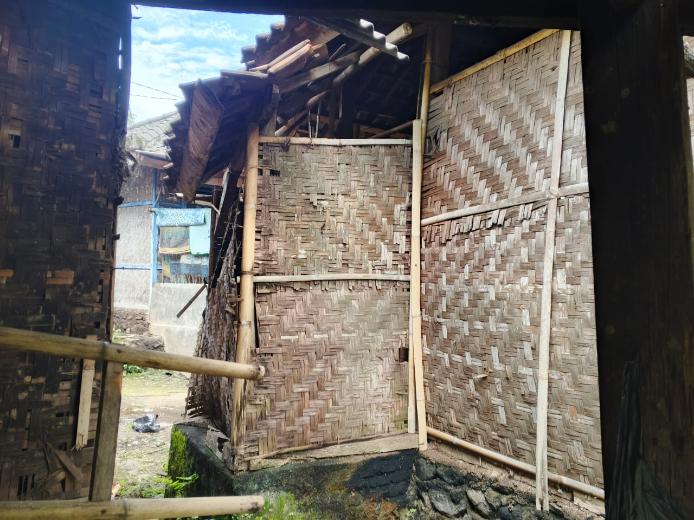
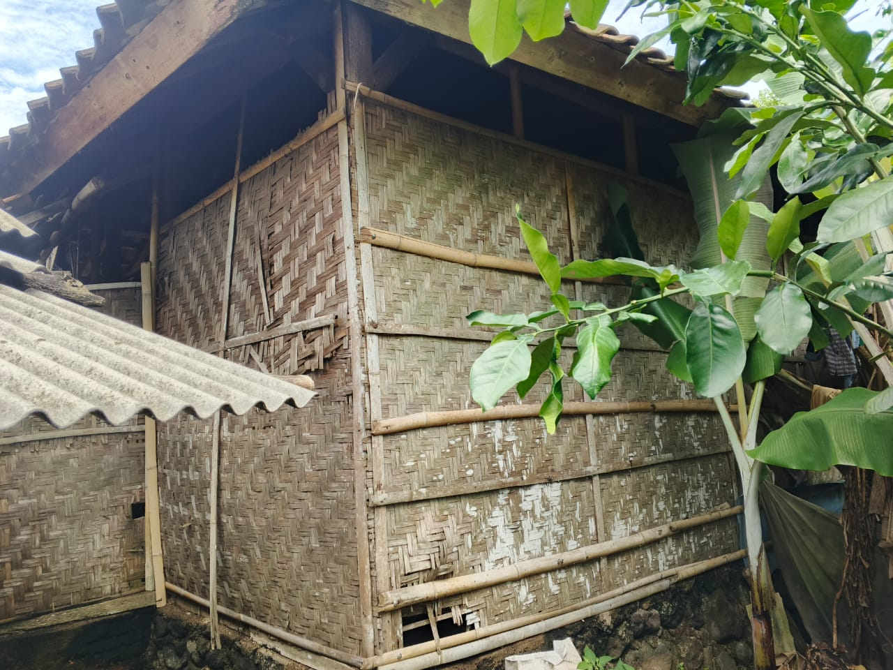
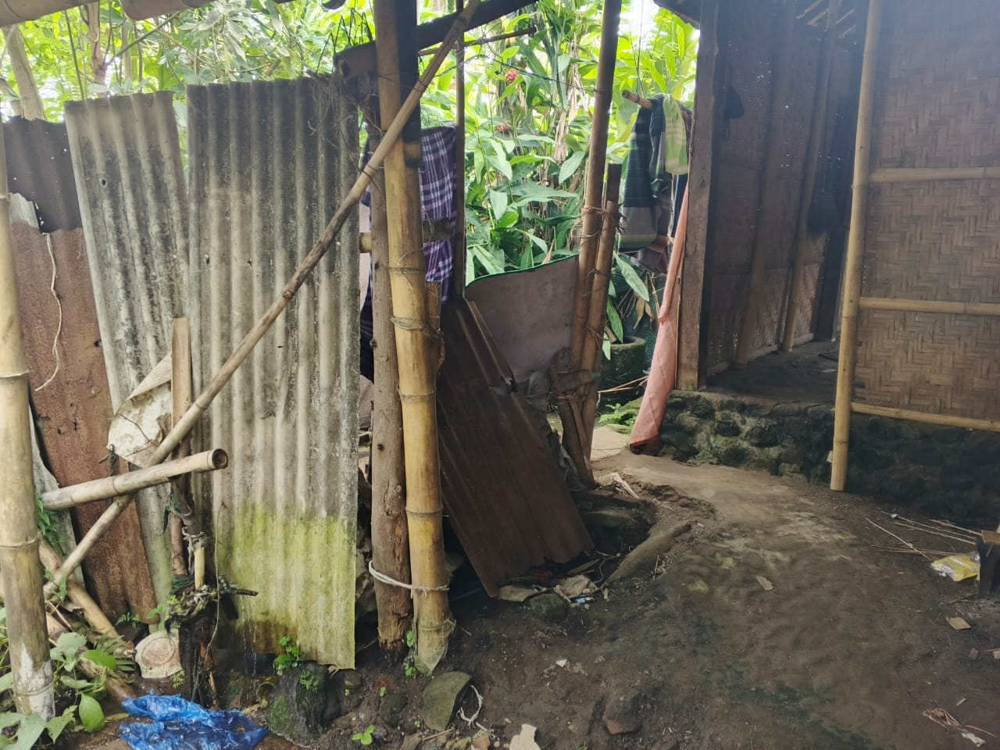
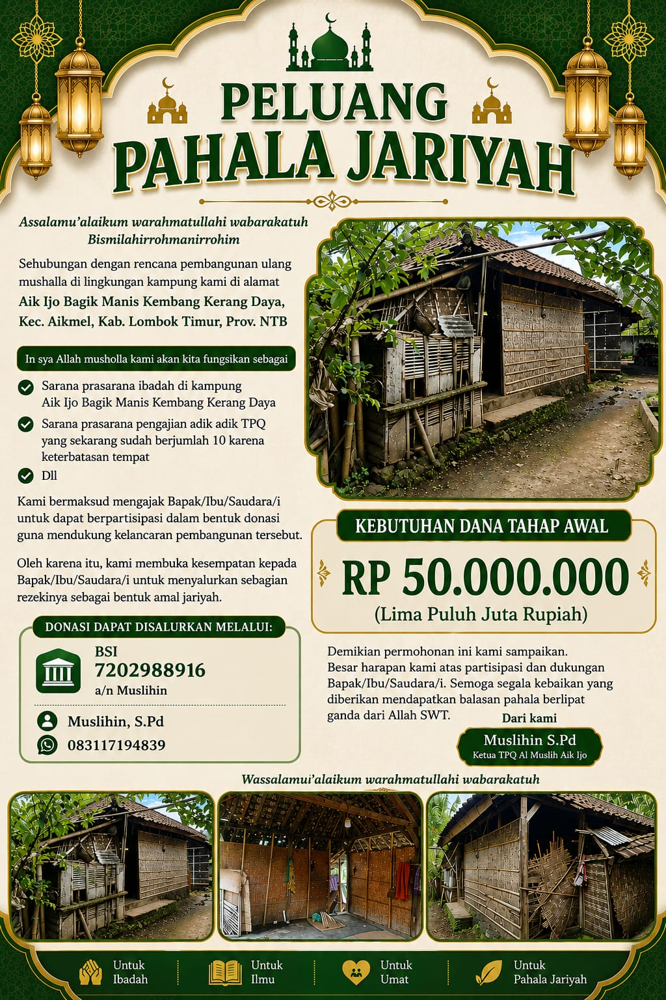

🕌 Peluang Pahala Jariyah: Pembangunan Ulang Mushalla Aik Ijo 🕌

Kondisi mushalla di kampung Aik Ijo Bagik Manis Kembang Kerang Daya saat ini
Assalamu'alaikum warahmatullahi wabarakatuh
Bismilahirrohmanirrohim
Sehubungan dengan rencana pembangunan ulang mushalla di lingkungan kampung kami di alamat Aik Ijo Bagik Manis Kembang Kerang Daya, Kec. Aikmel, Kab. Lombok Timur, Prov. NTB, kami bermaksud mengajak Bapak/Ibu/Saudara/i untuk dapat berpartisipasi dalam bentuk donasi guna mendukung kelancaran pembangunan tersebut.
In sya Allah, Mushalla Kami Akan Difungsikan Sebagai
- ✔ Sarana prasarana ibadah di kampung Aik Ijo Bagik Manis Kembang Kerang Daya
- ✔ Sarana prasarana pengajian adik-adik TPQ yang sekarang sudah berjumlah 10 karena keterbatasan tempat
- ✔ Dan lain-lain
Kondisi Mushalla Saat Ini



Oleh karena itu, kami membuka kesempatan kepada Bapak/Ibu/Saudara/i untuk menyalurkan sebagian rezekinya sebagai bentuk amal jariyah.
KEBUTUHAN DANA TAHAP AWAL
Rp 50.000.000
(Lima Puluh Juta Rupiah)
Donasi Dapat Disalurkan Melalui:

Demikian permohonan ini kami sampaikan. Besar harapan kami atas partisipasi dan dukungan Bapak/Ibu/Saudara/i. Semoga segala kebaikan yang diberikan mendapatkan balasan pahala berlipat ganda dari Allah SWT.
Dari kami,
Muslihin, S.Pd
Ketua TPQ Al Muslih Aik Ijo
Wassalamu'alaikum warahmatullahi wabarakatuh